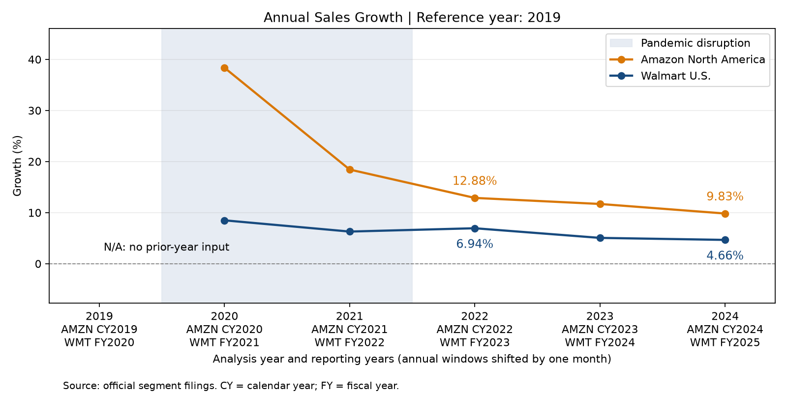
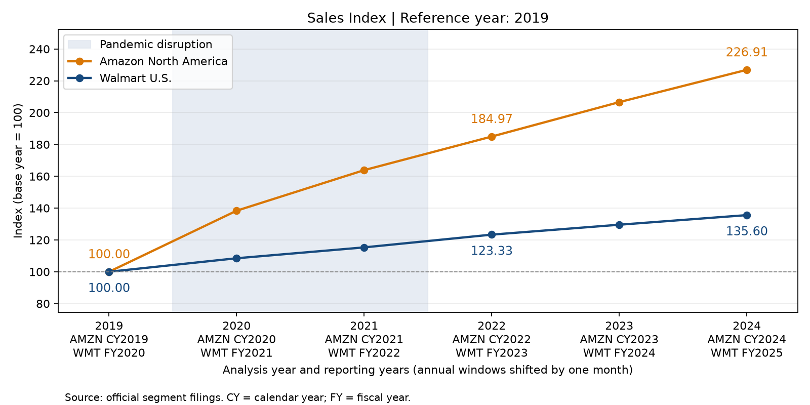
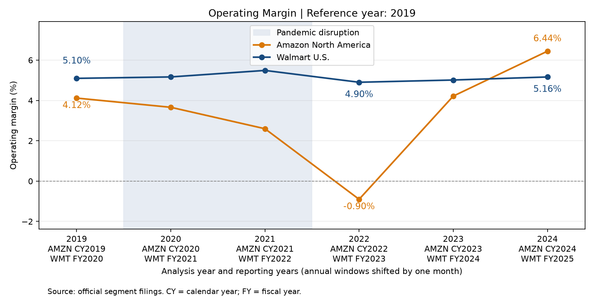

How did segment sales growth and operating profitability change around the pandemic, relative to 2019?
Annual sales growth = (current / previous sales - 1) * 100; operating margin = operating income / net sales * 100; sales index = sales / reference-year sales * 100. Full-window sales CAGR = ((last sales / first sales) ** (1 / growth intervals) - 1) * 100.
Amazon North America: sales changed by 126.91% from the reference year; full-window sales CAGR was 17.81% over 5 intervals. Ending operating margin was 6.44%, a change of 2.32 percentage points.
Walmart U.S.: sales changed by 35.60% from the reference year; full-window sales CAGR was 6.28% over 5 intervals. Ending operating margin was 5.16%, a change of 0.07 percentage points.
| unit_id | company | segment | start_year | end_year | growth_intervals | start_sales | end_sales | sales_cagr_pct |
|---|---|---|---|---|---|---|---|---|
| amazon | Amazon.com, Inc. | North America | 2019 | 2024 | 5 | 170773.0 | 387497.0 | 17.81 |
| walmart | Walmart Inc. | Walmart U.S. | 2019 | 2024 | 5 | 341004.0 | 462415.0 | 6.28 |



Amazon rapidly expanded its fulfillment network during the pandemic. Its 2022 filing describes demand returning toward normal seasonal levels relative to network fixed costs, alongside higher transportation, utility and wage costs. This supports an interpretation of capacity growing faster than normalized demand and inflation-related cost pressure around the North America loss.
Amazon 2022 Form 10-K, MD&A: operating cost pressuresAmazon describes regionalization as placing inventory closer to customers, shortening transport distances and lowering cost to serve; its 2024 letter describes continued network improvements. These changes provide context for the margin recovery. The 2024 filing also attributes higher North America operating income primarily to increased unit and advertising sales, partly offset by higher total fulfillment and shipping costs. Lower unit costs do not mean total costs fell.
Amazon 2023 shareholder letter: regionalization and unit costsThese management explanations provide context; the small descriptive sample cannot isolate each factor's causal contribution.
| company | segment | analysis_year | fiscal_year | period_start | period_end | net_sales | operating_income | sales_growth_pct | operating_margin_pct | sales_index |
|---|---|---|---|---|---|---|---|---|---|---|
| Amazon.com, Inc. | North America | 2019 | 2019 | 2019-01-01 | 2019-12-31 | 170773.0 | 7033.0 | N/A | 4.12 | 100.00 |
| Amazon.com, Inc. | North America | 2020 | 2020 | 2020-01-01 | 2020-12-31 | 236282.0 | 8651.0 | 38.36 | 3.66 | 138.36 |
| Amazon.com, Inc. | North America | 2021 | 2021 | 2021-01-01 | 2021-12-31 | 279833.0 | 7271.0 | 18.43 | 2.60 | 163.86 |
| Amazon.com, Inc. | North America | 2022 | 2022 | 2022-01-01 | 2022-12-31 | 315880.0 | -2847.0 | 12.88 | -0.90 | 184.97 |
| Amazon.com, Inc. | North America | 2023 | 2023 | 2023-01-01 | 2023-12-31 | 352828.0 | 14877.0 | 11.70 | 4.22 | 206.61 |
| Amazon.com, Inc. | North America | 2024 | 2024 | 2024-01-01 | 2024-12-31 | 387497.0 | 24967.0 | 9.83 | 6.44 | 226.91 |
| Walmart Inc. | Walmart U.S. | 2019 | 2020 | 2019-02-01 | 2020-01-31 | 341004.0 | 17380.0 | N/A | 5.10 | 100.00 |
| Walmart Inc. | Walmart U.S. | 2020 | 2021 | 2020-02-01 | 2021-01-31 | 369963.0 | 19116.0 | 8.49 | 5.17 | 108.49 |
| Walmart Inc. | Walmart U.S. | 2021 | 2022 | 2021-02-01 | 2022-01-31 | 393247.0 | 21587.0 | 6.29 | 5.49 | 115.32 |
| Walmart Inc. | Walmart U.S. | 2022 | 2023 | 2022-02-01 | 2023-01-31 | 420553.0 | 20620.0 | 6.94 | 4.90 | 123.33 |
| Walmart Inc. | Walmart U.S. | 2023 | 2024 | 2023-02-01 | 2024-01-31 | 441817.0 | 22154.0 | 5.06 | 5.01 | 129.56 |
| Walmart Inc. | Walmart U.S. | 2024 | 2025 | 2024-02-01 | 2025-01-31 | 462415.0 | 23882.0 | 4.66 | 5.16 | 135.60 |
| company | segment | comparison_stage | record_count | sales_growth_pct_mean | sales_growth_pct_valid_years | operating_margin_pct_mean | operating_margin_pct_valid_years | sales_index_mean | sales_index_valid_years |
|---|---|---|---|---|---|---|---|---|---|
| Amazon.com, Inc. | North America | Pre-pandemic baseline | 1 | N/A | 0 | 4.12 | 1 | 100.00 | 1 |
| Amazon.com, Inc. | North America | Pandemic disruption | 2 | 28.40 | 2 | 3.13 | 2 | 151.11 | 2 |
| Amazon.com, Inc. | North America | Subsequent adjustment | 3 | 11.47 | 3 | 3.25 | 3 | 206.16 | 3 |
| Walmart Inc. | Walmart U.S. | Pre-pandemic baseline | 1 | N/A | 0 | 5.10 | 1 | 100.00 | 1 |
| Walmart Inc. | Walmart U.S. | Pandemic disruption | 2 | 7.39 | 2 | 5.33 | 2 | 111.91 | 2 |
| Walmart Inc. | Walmart U.S. | Subsequent adjustment | 3 | 5.55 | 3 | 5.03 | 3 | 129.50 | 3 |
| unit_id | company | segment | comparison_stage | first_year | last_year | annual_records | valid_growth_years | average_growth_pct |
|---|---|---|---|---|---|---|---|---|
| amazon | Amazon.com, Inc. | North America | Pre-pandemic baseline | 2019 | 2019 | 1 | 0 | N/A |
| amazon | Amazon.com, Inc. | North America | Pandemic disruption | 2020 | 2021 | 2 | 2 | 28.40 |
| amazon | Amazon.com, Inc. | North America | Subsequent adjustment | 2022 | 2024 | 3 | 3 | 11.47 |
| walmart | Walmart Inc. | Walmart U.S. | Pre-pandemic baseline | 2019 | 2019 | 1 | 0 | N/A |
| walmart | Walmart Inc. | Walmart U.S. | Pandemic disruption | 2020 | 2021 | 2 | 2 | 7.39 |
| walmart | Walmart Inc. | Walmart U.S. | Subsequent adjustment | 2022 | 2024 | 3 | 3 | 5.55 |
Amazon CY2019-CY2024 (January-December) is approximately paired with Walmart FY2020-FY2025 (February-January). For example, Amazon CY2023 runs January 1-December 31, 2023; Walmart FY2024 runs February 1, 2023-January 31, 2024. The windows are shifted by one month, not identical.
All financial amounts are nominal USD millions, without inflation adjustment. Sales means segment net sales.
First study-year growth is unavailable, not zero. The sales index uses the configured base year.
Stage means average available annual values. They are not CAGR or pooled operating margins.
Stage labels are study groupings. One pre-pandemic year and different segment business mixes do not support causal pandemic conclusions.
Amazon North America includes services and excludes AWS. Walmart U.S. excludes Sam's Club and Walmart International. Their geography and revenue recognition differ.
Amounts were manually transcribed from adopted historical official filings. Later restatements are not automatically included.
Sales CAGR is calculated over the full configured study window: six annual observations from 2019 to 2024 contain five compounding intervals. It is separate from the stage arithmetic means.
https://www.sec.gov/Archives/edgar/data/1018724/000101872422000005/amzn-20211231.htm
https://www.sec.gov/Archives/edgar/data/1018724/000101872425000004/amzn-20241231.htm
https://www.sec.gov/Archives/edgar/data/104169/000010416922000012/wmt-20220131.htm
https://www.sec.gov/Archives/edgar/data/104169/000010416925000021/wmt-20250131.htm